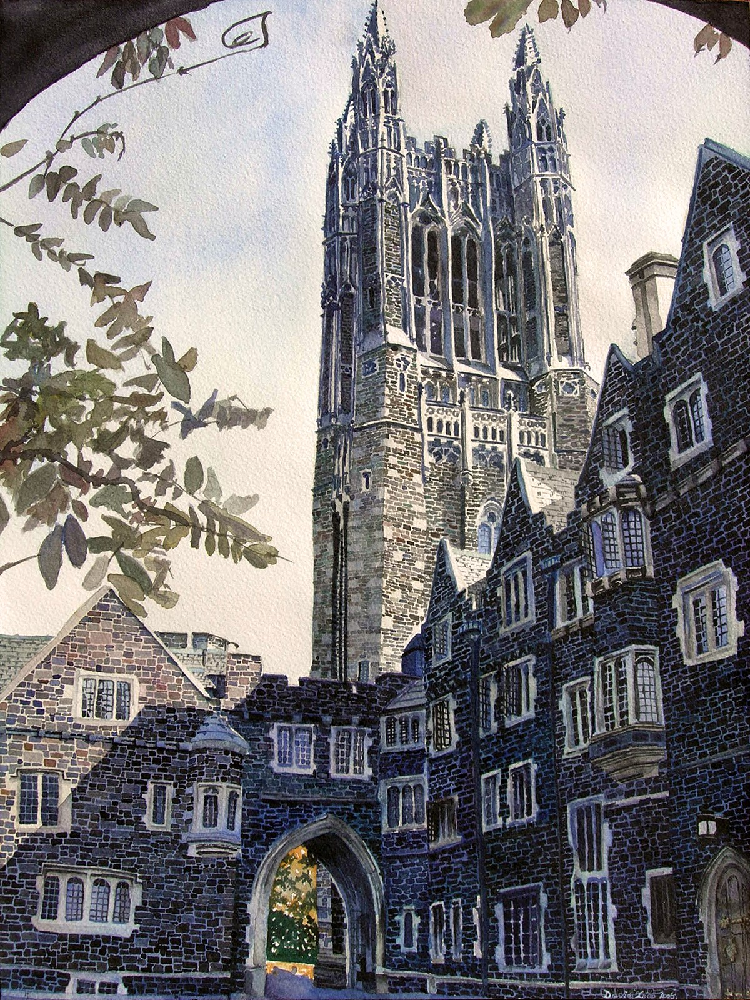

Születése, családja
1903. december 28-án született Budapesten. Apja Neumann Miksa Budapesten ügyvédként dolgozott, majd a Magyar Jelzálog- és Hitelbank igazgatói székébe került. Anyja Kann Margit a háztartást vezette és fiai nevelésével foglalkozott. Két öccse született, Mihály és Miklós.
Neumann Miksa, 1913-ban magyar nemességet valamint a "margittai” nemesi előnevet szerezte meg adománykén I. Ferenc József magyar királytól. Ezáltal leszármazottjai jogosulttá váltak ennek a nemesi előnévnek a használatára. Fia, Neumann János így lett hivatalosan "margittai Neumann János", aki későbbi külföldi tartózkodása idején vette fel először a Johann von Neumann, majd később a John von Neumann nevet, a világ nagyobbik részén ma is így ismerik.
1935-ben Kövesi Mariettától, első feleségétől megszületett Marina nevű lánya, aki híres közgazdász Amerikában. Miután elvált, 1938. november 17-én Budapesten, a Terézvárosban feleségül vette Dán Klárát
Neumann gyerekként
Neumann arcképe
Háttere
A Neumann család ingergazdag szellemi légkört teremtett a gyermekek számára, a gyakori beszélgetések nem kizárólag tudományról zajlottak, nem volt ritka a zenei, színházi vagy irodalmi téma. A gyerekek már fiatalon németül és franciául is tanultak nevelőnőiktől.
Ugyancsak mindennapos volt a vendégség a háznál, jöttek külföldiek és magyarok egyaránt. A hazai szellemi elit képviselői is tiszteletüket tették Neumannéknál, például Ortvay Rudolf, a budapesti tudományegyetem elméleti fizikai intézetének igazgatója és Fejér Lipót matematikaprofesszor.
Neumann már korán jóval meghaladta kortásai képességeit. A magyar anyanyelve, a francia és a német nyelvek mellett tanulta a latint és az ógörögöt is. Emlékezőtehetsége szinte fotografikus volt, és fejszámolásban is rendkívüli eredményeket mutatott fel. Ez utóbbi képessége felnőttkorában szinte védjegyévé vált. Legenda járt arról, hogy a korai elektronikus számológépek számításait ő maga ellenőrizte fejben a gépekével azonos sebességgel. Hasonlóan legendás volt emlékezőtehetsége. Élete végéig görögül idézett Thuküdidészből, és franciául Voltaire-ből.
Iskolái
Neumann már tízéves kora előtt csodagyereknek számított, majd 1913-ban szülei beíratták a híres fasori evangélikus főgimnáziumba Ebbe az iskolába járt a Nobel-díjas Wigner Jenő és Harsányi János is, ahol mindhárman Rátz László tanár úrtól tanulták a matematikát.
1921-ben Neumann beiratkozott a Budapesti Tudományegyetem matematika szakára. Egyetemi évei alatt sokat tartózkodott Berlinben, ahol Fritz Habernél kémiát, Albert Einsteinnél statisztikus mechanikát és Erhardt Schmidtnél matematikát hallgatott. Berlinben szorosra fűzte kapcsolatát Wignerrel, Szilárd Leóval és Gábor Dénessel. Apja kívánságára Neumann 1923-ban Zürichbe ment, hogy a Zürichi Műszaki Egyetemen vegyészetet tanuljon. Vegyészmérnöki diplomáját 1925-ben szerezte, matematikából pedig egy évvel később doktorált Budapesten. 1928-as cikkében Neumann megfogalmazta a kétszemélyes nullaösszegű nem kooperatív játék egyensúlyát, és megfelelő feltevések mellett igazolta az egyensúly létezését.
Eötvös Lóránd tudományegyetem
Princetoni egyetem
Amerika
1930-ban meghívták vendégprofesszornak az Egyesült Államokba, a Princetoni Egyetemre. Hamarosan az ottani egyetem professzora lett, majd az újonnan megnyílt princetoni Institute for Advanced Studies professzora, ahol a világ legkiválóbb tudósai gyűltek össze.
A második világháború idején addigi tevékenysége mellett ő is bekapcsolódott a haditechnikai kutatásokba. Rendszeresen járt Los Alamosba, ahol részt vett az első atombomba megépítésével kapcsolatos titkos programban, az előállítással kapcsolatos elméleti munkában. Az 1930-as évek végétől érdeklődése egyre jobban az alkalmazott matematikai problémák felé fordult.
1951-től 1954-ig az Amerikai társaság elnöke volt. Megkapta az Egyesült Államok Érdemérmét (1954), amiért útjára indította a 20. század második felének informatikai forradalmát. 1955-ben az öttagú Atomenergia Bizottság (AEC) tagjává nevezték ki, amely akkor a legmagasabb szintű kormánymegbízatásnak számított egy tudós számára. Az atom- és hidrogénbombák kísérleti robbantásainál az ott keletkező lökéshullámok tanulmányozása során olyan bonyolult matematikai összefüggéseket fedezett fel, amelyek a klasszikus módszerekkel már nem voltak megoldhatók. Ekkor fordult érdeklődése a nagysebességű elektronikus számítások lehetősége felé.
Halála
1955. augusztus 15-én csontrákra utaló elváltozást találtak a nyakában, ami feltehetőleg a korábban diagnosztizált prosztatarák áttéte volt. A következő év elején állapota tovább romlott, és kerekesszékbe kényszerült. 1956 áprilisában kórházba került, amit korai haláláig már nem hagyhatott el. 1957. február 8-án halt meg Washingtonban, végső nyughelye Princetonban van.

Short Description
Neuamnn János was born in 1903. december 28, on Budapest. He had two siblings.
His father, In 1913, Miksa Neumann received Hungarian nobility and the noble first name "Margitta" as a gift from the Hungarian King Ferenc József I. His son, János Neumann, officially became "János Neumann of Margitta".
The Neumann family created a stimulating intellectual atmosphere for the children, the frequent conversations were not only about science, music, theater or literature were not uncommon. The children learned German and French from their governesses at an early age.
Neumann was already considered a child prodigy before the age of ten, and in 1913 his parents enrolled him in the famous Lutheran high school in Fasor
In 1930, he was invited to Princeton University in the United States as a visiting professor. During the Second World War, in addition to his previous activities, he also got involved in military research.
Források